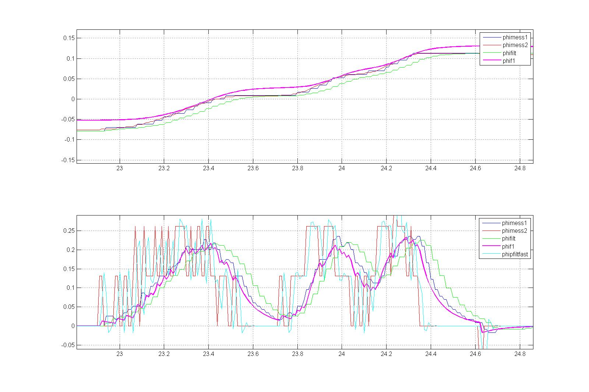

Schnelles Filtern des Lenkwinkels DSwaFiltFast- Problem ist, das ein schnelle Filterung immer zu deutlichen Spitzen in dem Filtersignal der Lenkwinkelgeschw. kommt und damit bei der Dämpfung zu starken Gradientenänderungen, was wiederum zu Geräuschen führt.
- Hier habe ich jetzt eine variablen PT1-Filter mit variabler Zeitkonstante verwendet. Bei geringer Geschwindigkeit wird stark gefilter f = f0 = 1/T0 klein und bei hoher Geschwindigkeit wird schwach gefiltert f = f1 = 1/T1 groß. Außerdem wird die Lenkwinkelbeschleunigung gebildet, damit kann noch eine sehr schnelle Änderung detektiert werden und die Filterkonstante f wieder groß werden.
- Außerdem wird noch ein Mittelwertfilter angewendet wenn die Differenz vom vorletzten zu letzen Wert und aktuellen zu letztem unterschiedliche Vorzeichen haben. Damit werden die Spitzen noch etwas abgemildert.
Pseudocode:
Input: SwaIn gemessener Lenkwinkel (in Passat wird EPS-Lenkwinkel genutzt)
State: SwaInL letzter Wert gemessener Lenkwinkel
State: DSwaFiltFastL letzter Wert Filterwinkelgeschw
State: DSwaFiltFastLL vorletzter Wert Filterwinkelgeschw
State: DDSwaFiltFast Filterwinkelbeschleunigung
State: DDSwaFiltFastL letzter Wert Filterwinkelbeschleunigung
State: DDSwaFiltFastLL vorletzter Wert Filterwinkelbeschleunigung
Output: DSwaFiltFast gefileterte Lenkwinkelgeschw.
Parameter: LoopTime = 0.01 s Loopzeit
FiltFastDSwaMax = 4 rad/s maximale Lenkwinkelgeschw. für f1
FiltFastf0 = 10 1/s Filterfrequenz starke Filterung
FiltFastf1 = 100 1/s Filterfrequenz schwache Filterung
FiltFastDDSwaMin = 10 rad/s/s minimale Lenkwinkelbeschl
FiltFastDDSwaMax = 40 rad/s/s maximale Lenkwinkelbeschl
variable: f,d
Umspeichern
-----------
DSwaFiltFastLL = DSwaFiltFastL
DSwaFiltFastL = DSwaFiltFast
DDSwaFiltFastLL = DDSwaFiltFastL
DDSwaFiltFastL = DDSwaFiltFast
Bestimmung Filterkonstante anhand Lenkwinkelgeschw.
---------------------------------------------------
if( DSwaFiltFastL < 0.0 ) d = -DSwaFiltFastL
else d = DSwaFiltFastL
if( d < FiltFastDSwaMax ) f = FiltFastf0 + (FiltFastf1-FiltFastf0) * d / FiltFastDSwaMax
else f = FiltFastf1
Bestimmung Filterkonstante anhand Lenkwinkelbeschl.
---------------------------------------------------
if( DDSwaFiltFastL < 0.0 ) d = -DDSwaFiltFastL
else d = DDSwaFiltFastL
if( d > FiltFastDDSwaMax ) d = FiltFastf1
else if( d > FiltFastDDSwaMin ) d = FiltFastf0 +
(FiltFastf1-FiltFastf0) * (d - FiltFastDDSwaMin) / (FiltFastDDSwaMax-FiltFastDDSwaMin)
else d = 0.0
if( d > f ) f = d
d = exp( -LoopTime * f )
Ableitung Lenkwinkel
--------------------
f = (SwaIn-SwaInL)/LoopTime
Filterung
---------
DSwaFiltFast = DSwaFiltFastL * d + f * (1.-d)
Mittelwertbildung
-----------------
d = DSwaFiltFastL - DSwaFiltFastLL
f = DSwaFiltFast - DSwaFiltFastL
if( d * f < 0.0 ) DSwaFiltFast = (DSwaFiltFast+DSwaFiltFastL) * 0.5
Ableitung Lenkwinkelgeschw.
---------------------------
DDSwaFiltFast = (DSwaFiltFast-DSwaFiltFastL)/LoopTime
Mittelwertbildung
-----------------
d = DDSwaFiltFastL - DDSwaFiltFastLL
f = DDSwaFiltFast - DDSwaFiltFastL
if( d * f < 0.0 ) DDSwaFiltFast = (DDSwaFiltFast+DDSwaFiltFastL) * 0.5
Diagramm aus einer Messung:
